CODING AGENTS AS PIXEL WORLD MODELS
traex/DeepSeek-V4.1-Flash · 0190
点击播放 · 原生 RGB 像素
逐轮保存的候选
回放视频、检查图与代码变化。
每份候选均可单独播放。实际图片检查记录在下方工具轨迹中。
候选 01播放与检查图
点击播放 · 原生 RGB 像素

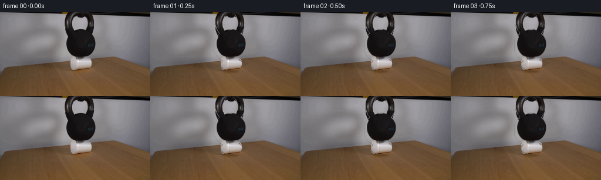
展开代码变化
--- 上一保存版本
+++ 本次保存版本
@@ -0,0 +1,185 @@
+from pathlib import Path
+
+import cv2
+import numpy as np
+from PIL import Image
+
+import artifact_io
+
+
+CASE_DIR = Path(__file__).resolve().parent
+WIDTH, HEIGHT = 256, 144
+FRAME_COUNT = 20
+
+
+def _object_masks(image):
+ h, w = image.shape[:2]
+ yy, xx = np.mgrid[:h, :w]
+
+ body = (((xx - 135.5) / 28.2) ** 2 + ((yy - 57.5) / 28.0) ** 2 <= 1.0)
+ body &= (xx >= 109) & (xx <= 162) & (yy >= 31) & (yy <= 86)
+
+ handle_outer = (((xx - 136.0) / 25.6) ** 2 + ((yy - 15.0) / 28.5) ** 2 <= 1.0)
+ handle_hole = (((xx - 136.0) / 11.8) ** 2 + ((yy - 14.5) / 15.0) ** 2 <= 1.0)
+ handle = handle_outer & ~handle_hole & (yy <= 35)
+ handle &= (xx >= 110) & (xx <= 162)
+
+ bell = (body | handle).astype(np.float32)
+
+ cup = (((xx - 138.5) / 19.2) ** 2 + ((yy - 89.4) / 10.2) ** 2 <= 1.0)
+ cup = cup.astype(np.float32)
+
+ bell = cv2.GaussianBlur(bell, (0, 0), 0.55)
+ cup = cv2.GaussianBlur(cup, (0, 0), 0.55)
+ return bell, cup
+
+
+def _background_plate(image, bell_mask, cup_mask):
+ removal = ((bell_mask > 0.08) | (cup_mask > 0.08)).astype(np.uint8)
+ removal = cv2.dilate(removal, np.ones((3, 3), np.uint8), iterations=1)
+ removal[98:106, 113:164] = 1
+
+ bgr = cv2.cvtColor(image, cv2.COLOR_RGB2BGR)
+ plate = cv2.inpaint(bgr, removal * 255, 4, cv2.INPAINT_TELEA)
+ plate = cv2.cvtColor(plate, cv2.COLOR_BGR2RGB)
+
+ # The exposed regions are smooth wall/table areas. Suppress long inpaint streaks
+ # by blending the repair toward matching samples from either side.
+ result = plate.astype(np.float32)
+ for y in range(0, 87):
+ left = image[y, 88:108].mean(axis=0)
+ right = image[y, 166:186].mean(axis=0)
+ t = np.linspace(0.0, 1.0, 77, dtype=np.float32)[:, None]
+ synth = left[None, :] * (1.0 - t) + right[None, :] * t
+ result[y, 106:183] = 0.72 * synth + 0.28 * result[y, 106:183]
+
+ for y in range(99, 110):
+ left = image[y, 86:108].mean(axis=0)
+ right = image[y, 168:192].mean(axis=0)
+ t = np.linspace(0.0, 1.0, 73, dtype=np.float32)[:, None]
+ synth = left[None, :] * (1.0 - t) + right[None, :] * t
+ result[y, 106:179] = 0.75 * synth + 0.25 * result[y, 106:179]
+
+ return np.clip(result, 0, 255).astype(np.uint8)
+
+
+def _premultiplied_layer(image, alpha):
+ alpha3 = alpha[:, :, None]
+ rgba = np.empty((HEIGHT, WIDTH, 4), dtype=np.float32)
+ rgba[:, :, :3] = image.astype(np.float32) * alpha3
+ rgba[:, :, 3] = alpha * 255.0
+ return rgba
+
+
+def _warp_layer(layer, matrix):
+ warped = cv2.warpAffine(
+ layer,
+ matrix,
+ (WIDTH, HEIGHT),
+ flags=cv2.INTER_LINEAR,
+ borderMode=cv2.BORDER_CONSTANT,
+ borderValue=0,
+ )
+ alpha = np.clip(warped[:, :, 3] / 255.0, 0.0, 1.0)
+ rgb = np.zeros((HEIGHT, WIDTH, 3), dtype=np.float32)
+ valid = alpha > 1e-5
+ rgb[valid] = warped[:, :, :3][valid] / alpha[valid, None]
+ return rgb, alpha
+
+
+def _over(dst, rgb, alpha):
+ a = alpha[:, :, None]
+ dst[:] = dst * (1.0 - a) + rgb * a
+
+
+def _shadow(base, cx, cy, rx, ry, strength):
+ yy, xx = np.mgrid[:HEIGHT, :WIDTH]
+ field = ((xx - cx) / rx) ** 2 + ((yy - cy) / ry) ** 2
+ shade = np.exp(-2.5 * field) * strength
+ return base * (1.0 - shade[:, :, None])
+
+
+def _ease_progress(frame_index):
+ t = np.clip((frame_index - 1) / 18.0, 0.0, 1.0)
+ smooth = t * t * (3.0 - 2.0 * t)
+ # A small, rapidly damped settle is visible during the first half second.
+ wobble = 0.010 * np.sin(2.0 * np.pi * 1.55 * t) * (1.0 - t) ** 2
+ return float(np.clip(smooth + wobble, 0.0, 1.0))
+
+
+def generate_frames():
+ source = np.asarray(Image.open(CASE_DIR / "first_frame.png").convert("RGB"))
+ if source.shape != (HEIGHT, WIDTH, 3):
+ raise ValueError(f"first_frame.png must be {WIDTH}x{HEIGHT}, got {source.shape}")
+
+ bell_alpha, cup_alpha = _object_masks(source)
+ plate = _background_plate(source, bell_alpha, cup_alpha)
+ bell_layer = _premultiplied_layer(source, bell_alpha)
+ cup_layer = _premultiplied_layer(source, cup_alpha)
+
+ frames = np.empty((FRAME_COUNT, HEIGHT, WIDTH, 3), dtype=np.uint8)
+ frames[0] = source
+
+ cup_cx, cup_bottom = 138.5, 99.4
+ for i in range(1, FRAME_COUNT):
+ p = _ease_progress(i)
+
+ cup_sy = 1.0 - 0.30 * p
+ cup_sx = 1.0 + 0.065 * p
+ cup_top = cup_bottom - 20.4 * cup_sy
+ bell_dy = 6.3 * p + 0.10 * np.sin(2.0 * np.pi * 1.7 * p) * (1.0 - p)
+ tilt = -0.16 * p
+
+ base = source.astype(np.float32)
+ repair = ((bell_alpha > 0.03) | (cup_alpha > 0.03))
+ base[repair] = plate[repair].astype(np.float32)
+
+ base = _shadow(base, 138.0, 101.0, 22.0 + 1.4 * p, 4.6 + 0.3 * p, 0.27 + 0.035 * p)
+ base = _shadow(base, 138.0, 97.2, 18.5 + 1.2 * p, 3.0, 0.10 + 0.035 * p)
+
+ cup_m = np.array(
+ [[cup_sx, 0.0, cup_cx - cup_sx * cup_cx],
+ [0.0, cup_sy, cup_bottom - cup_sy * cup_bottom]],
+ dtype=np.float32,
+ )
+ cup_rgb, cup_a = _warp_layer(cup_layer, cup_m)
+
+ # Contact darkening from the bell is strongest at the cup's loaded upper edge.
+ yy, xx = np.mgrid[:HEIGHT, :WIDTH]
+ contact = np.exp(-((yy - (cup_top + 1.0)) / 2.2) ** 2) * (xx > 119) * (xx < 159)
+ contact = cv2.GaussianBlur(contact.astype(np.float32), (0, 0), 0.8)
+ cup_rgb *= (1.0 - 0.16 * contact[:, :, None] * p)
+ _over(base, cup_rgb, cup_a)
+
+ theta = np.deg2rad(tilt)
+ c, s = np.cos(theta), np.sin(theta)
+ center = np.array([135.5, 53.0])
+ rot = np.array([[c, -s], [s, c]], dtype=np.float32)
+ bell_m = np.column_stack([rot, center - rot @ center + np.array([0.0, bell_dy])])
+ bell_m = bell_m.astype(np.float32)
+ bell_rgb, bell_a = _warp_layer(bell_layer, bell_m)
+
+ # The photographed handle continues past the top edge. Extend that clipped
+ # section while it settles so no false silhouette enters the frame.
+ top_fill = np.zeros((HEIGHT, WIDTH), dtype=np.float32)
+ top_fill[: max(0, int(np.ceil(bell_dy)) + 1), 112:161] = 1.0
+ top_fill = cv2.GaussianBlur(top_fill, (0, 0), 0.45)
+ top_rgb = np.repeat(source[0:1, 112:161], HEIGHT, axis=0)
+ top_layer_rgb = np.zeros_like(base)
+ top_layer_rgb[:, 112:161] = top_rgb
+ bell_rgb = bell_rgb * (1.0 - top_fill[:, :, None]) + top_layer_rgb * top_fill[:, :, None]
+ bell_a = np.maximum(bell_a, top_fill)
+ _over(base, bell_rgb, bell_a)
+
+ # Slight high-frequency noise matches the source's camera/video texture.
+ rng = np.random.default_rng(190 + i)
+ grain = rng.normal(0.0, 0.42, size=(HEIGHT, WIDTH, 1)).astype(np.float32)
+ base += grain
+
+ frames[i] = np.clip(base, 0, 255).round().astype(np.uint8)
+
+ return frames
+
+
+if __name__ == "__main__":
+ artifact_io.save(generate_frames(), CASE_DIR)
候选 02播放与检查图
点击播放 · 原生 RGB 像素

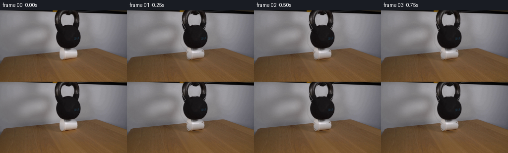
展开代码变化
--- 上一保存版本
+++ 本次保存版本
@@ -120,12 +120,12 @@
frames = np.empty((FRAME_COUNT, HEIGHT, WIDTH, 3), dtype=np.uint8)
frames[0] = source
- cup_cx, cup_bottom = 138.5, 99.4
+ cup_cx, cup_bottom = 138.5, 99.6
for i in range(1, FRAME_COUNT):
p = _ease_progress(i)
- cup_sy = 1.0 - 0.30 * p
- cup_sx = 1.0 + 0.065 * p
+ cup_sy = 1.0 - 0.27 * p
+ cup_sx = 1.0 + 0.085 * p
cup_top = cup_bottom - 20.4 * cup_sy
bell_dy = 6.3 * p + 0.10 * np.sin(2.0 * np.pi * 1.7 * p) * (1.0 - p)
tilt = -0.16 * p
@@ -143,9 +143,17 @@
dtype=np.float32,
)
cup_rgb, cup_a = _warp_layer(cup_layer, cup_m)
+ yy, xx = np.mgrid[:HEIGHT, :WIDTH]
+
+ # Re-light the newly exposed foam sides and preserve a bright compressed rim.
+ lateral = np.clip((xx - cup_cx) / (19.2 * cup_sx), -1.0, 1.0)
+ cup_rgb *= (0.91 + 0.075 * np.clip(-lateral, 0.0, 1.0))[:, :, None]
+ cup_rgb *= (0.96 + 0.055 * p * np.clip(1.0 - np.abs(lateral), 0.0, 1.0))[:, :, None]
+ rim = np.exp(-((yy - (cup_top + 1.0)) / 1.55) ** 2)
+ rim *= (xx > 119 - 3 * p) & (xx < 159 + 3 * p)
+ cup_rgb += rim[:, :, None] * np.array([10.0, 9.0, 8.0]) * p
# Contact darkening from the bell is strongest at the cup's loaded upper edge.
- yy, xx = np.mgrid[:HEIGHT, :WIDTH]
contact = np.exp(-((yy - (cup_top + 1.0)) / 2.2) ** 2) * (xx > 119) * (xx < 159)
contact = cv2.GaussianBlur(contact.astype(np.float32), (0, 0), 0.8)
cup_rgb *= (1.0 - 0.16 * contact[:, :, None] * p)
可观测工具轨迹
实际执行的命令与返回图片。
命令 1exit 0
/bin/bash -c "pwd && rg --files -g 'prompt.txt' -g 'GENERATION_RULES.md' -g 'first_frame.png' -g '"'!node_modules'"'"
命令 2exit 0
/bin/bash -c "sed -n '1,240p' prompt.txt"
命令 3exit 0
/bin/bash -c "sed -n '1,260p' GENERATION_RULES.md"
命令 4exit 0
/bin/bash -c 'ls -la && file first_frame.png && identify first_frame.png 2>/dev/null || true'
命令 5exit 0
/bin/bash -c "python3 - <<'PY'
from PIL import Image
im=Image.open('first_frame.png')
print(im.mode, im.size)
print(im.getpixel((0,0)), im.getpixel((128,72)))
PY"命令 6exit 0
/bin/bash -c "python3 - <<'PY'
from PIL import Image
im=Image.open('first_frame.png')
im.crop((90,0,185,125)).resize((760,1000)).save('.tmp/crop.png')
PY"命令 7exit 0
/bin/bash -c "sed -n '1,260p' artifact_io.py && sed -n '1,220p' player_template.html"
命令 8exit 0
/bin/bash -c "python3 - <<'PY' mods=['numpy','PIL','cv2','scipy','skimage'] for m in mods: try: x=__import__(m); print(m,'ok',getattr(x,'__version__','')) except Exception as e: print(m,'no',e) PY"
命令 9exit 0
/bin/bash -c "python3 - <<'PY'
from PIL import Image
import numpy as np
im=np.array(Image.open('first_frame.png'))
# coarse grayscale and color samples across object center
for y in range(0,144,8):
row=[]
for x in range(88,184,8): row.append('%3d'%int(im[y,x].mean()))
print(f'{y:3}:',' '.join(row))
PY"命令 10exit 0
/bin/bash -c "python3 - <<'PY'
from PIL import Image
import numpy as np
im=np.array(Image.open('first_frame.png')).astype(np.float32)
# print vertical boundary transitions by row around object
for y in [0,8,16,24,32,40,48,56,64,72,80,84,88,92,96,100,104,108,112,116,120,124,128]:
g=im[y].mean(1)
# derivative significant
d=np.abs(np.diff(g))
idx=np.where(d>35)[0]
# collapse nearby
runs=[]
for i in idx:
if not runs or i-runs[-1][-1]>2:runs.append([i])
else:runs[-1].append(i)
print(y,[(r[0],r[-1]) for r in runs if r[-1]>=70 and r[0]<=200])
PY"命令 11exit 0
/bin/bash -c 'python3 .tmp/explore_masks.py'
命令 12exit 0
/bin/bash -c 'python3 .tmp/explore_masks.py'
命令 13exit 0
/bin/bash -c "python3 - <<'PY'
from PIL import Image
im=Image.open('first_frame.png')
im.crop((95,0,180,110)).resize((850,1100),Image.Resampling.NEAREST).save('.tmp/crop_nn.png')
PY"命令 14exit 0
/bin/bash -c 'python3 .tmp/mask_test.py'
命令 15exit 0
/bin/bash -c "python3 - <<'PY'
from PIL import Image
import numpy as np
im=np.array(Image.open('first_frame.png')).astype(float)
# test wall background horizontal interpolation across x for each y
for y in [5,20,40,60,75,85,90,95,100,105,110]:
print('y',y)
for x in [95,100,105,110,115,120,125,130,135,140,145,150,155,160,165,170,175]:
rgb=im[y,x].astype(int)
print(x,tuple(rgb),end='; ')
print()
PY"命令 16exit 0
/bin/bash -c "python3 - <<'PY'
from PIL import Image
import numpy as np
im=np.array(Image.open('first_frame.png')).astype(int)
# print rows with x 112-164 in 4px blocks, mean rgb
for y in range(0,104,4):
print(f'{y:3}',end=' ')
for x in range(108,169,4):
c=im[max(0,y-1):y+2,x-1:x+2].mean((0,1)).astype(int)
print('%3d/%3d/%3d'%tuple(c),end=' ')
print()
PY"命令 17exit 0
/bin/bash -c 'python3 .tmp/build_assets.py'
命令 18exit 0
/bin/bash -c "python3 - <<'PY'
from PIL import Image
import numpy as np
for f in ['bell.png','cup.png','background_clean.png']:
im=np.array(Image.open('.tmp/'+f))
print(f,im.shape,im.dtype, im[...,:3].min(), im[...,:3].max())
PY"命令 19exit 1
/bin/bash -c "python3 - <<'PY'
from PIL import Image
import numpy as np
src=np.array(Image.open('first_frame.png'))
bg=np.array(Image.open('.tmp/background_clean.png').resize((256,144),Image.Resampling.NEAREST))
alpha=np.array(Image.open('.tmp/object_alpha.png').resize((256,144),Image.Resampling.NEAREST))[...,0:1]/255.
comp=(src*alpha+bg*(1-alpha)).round().astype('uint8')
Image.fromarray(comp).save('.tmp/recompose0.png')
print('meanerr',np.abs(comp.astype(float)-src).mean(),'max',np.abs(comp.astype(int)-src.astype(int)).max())
PY"命令 20exit 1
/bin/bash -c "python3 - <<'PY'
from PIL import Image
import numpy as np
src=np.array(Image.open('first_frame.png'))
bg=np.array(Image.open('.tmp/background_clean.png').resize((256,144),Image.Resampling.NEAREST))
alpha=np.array(Image.open('.tmp/object_alpha.png').resize((256,144),Image.Resampling.NEAREST))[...,0:1]/255.
comp=(src*alpha+bg*(1-alpha)).round().astype('uint8')
Image.fromarray(comp).save('.tmp/recompose0.png')
print('meanerr',np.abs(comp.astype(float)-src).mean(),'max',np.abs(comp.astype(int)-src.astype(int)).max())
PY"命令 21exit 0
/bin/bash -c 'python3 generate.py'
命令 22exit 1
/bin/bash -c 'python3 generate.py'
命令 23exit 0
/bin/bash -c 'python3 generate.py'
命令 24exit 0
/bin/bash -c "python3 - <<'PY'
from PIL import Image
import numpy as np
src=np.array(Image.open('first_frame.png'))
f0=np.array(Image.open('frames/00.png'))
print('identical',np.array_equal(src,f0))
for i in [0,1,4,8,12,16,19]:
a=np.array(Image.open(f'frames/{i:02d}.png')).astype(float)
print(i,'object center',a[85:102,118:160].mean((0,1)).round(1),'global',a.mean().round(2))
PY"命令 25exit 0
/bin/bash -c "python3 - <<'PY'
from PIL import Image
import numpy as np
for i in range(20):
a=np.array(Image.open(f'frames/{i:02d}.png')).astype(float)
print(i,round(a.mean(),2),round(a.std(),2),round(np.abs(np.diff(a,axis=0)).mean(),2),round(np.abs(np.diff(a,axis=1)).mean(),2))
PY"命令 26exit 0
/bin/bash -c "python3 - <<'PY'
from PIL import Image
import numpy as np
im=np.array(Image.open('first_frame.png'))
# output boundary x per y based on brightness thresholds on right side
for y in range(8,94,4):
g=im[y].mean(1)
vals=np.where(g>105)[0]
# contiguous run nearest object right
runs=[]
for x in vals:
if not runs or x>runs[-1][-1]+1:runs.append([x])
else:runs[-1].append(x)
print(y,[(r[0],r[-1]) for r in runs if r[-1]>145 and r[0]<180])
PY"命令 27exit 0
/bin/bash -c "python3 - <<'PY'
from PIL import Image
import numpy as np
for i in [0,4,8,12,16,19]:
im=np.array(Image.open(f'frames/{i:02d}.png')).astype(float)
print('frame',i)
for y in [70,74,78,80,82,84,86,88,90,92,94,96,98,100,102]:
print(y,tuple(im[y,138].astype(int)),end='; ')
print()
PY"命令 28exit 0
/bin/bash -c "python3 - <<'PY'
from PIL import Image
import numpy as np
for i in range(20):
im=np.array(Image.open(f'frames/{i:02d}.png')).astype(float)
# row 90 width above 130 in cup region
row=im[90,115:165].mean(1)
xs=np.where(row>120)[0]
print(i,(xs.min()+115,xs.max()+115) if len(xs) else None)
PY"命令 29exit 0
/bin/bash -c "python3 - <<'PY'
from PIL import Image
import numpy as np
src=np.array(Image.open('first_frame.png')).astype(float)
f=np.array(Image.open('frames/19.png')).astype(float)
# average abs diff per spatial region
for name,(x0,x1,y0,y1) in {'object':(108,164,0,104),'wallL':(0,105,0,82),'wallR':(165,256,0,82),'tableL':(0,110,102,144),'tableR':(165,256,102,144),'edge':(100,180,70,110)}.items():
print(name, np.abs(src[y0:y1,x0:x1]-f[y0:y1,x0:x1]).mean())
PY"命令 30exit 0
/bin/bash -c "python3 - <<'PY'
from PIL import Image
import numpy as np
for i in [1,4,8,12,16,19]:
im=np.array(Image.open(f'frames/{i:02d}.png')).astype(float)
print('frame',i)
for y in [82,84,86,88,90,92,94,96,98,100]:
print(y,tuple(im[y,120].astype(int)),tuple(im[y,155].astype(int)),end=' | ')
print()
PY"命令 31exit 0
/bin/bash -c "python3 - <<'PY'
from PIL import Image
import numpy as np
im=np.array(Image.open('first_frame.png'))
for y in [82,84,86,88,90,92,94,96,98,100]:
print('y',y)
for x in range(116,161,3): print(x,tuple(im[y,x].astype(int)),end=';')
print()
PY"命令 32exit 0
/bin/bash -c "python3 - <<'PY'
from PIL import Image
import numpy as np
src=np.array(Image.open('first_frame.png')).astype(float)
# Check source per-row correlation and find cup edges via threshold; estimate cup bottom as row where center brightness drops sharply
for x in [125,130,135,140,145,150]:
g=src[:,x].mean(1)
print('x',x,[(y,round(g[y],1)) for y in range(78,103)])
PY"命令 33exit 0
/bin/bash -c "python3 - <<'PY'
from PIL import Image
import numpy as np
src=np.array(Image.open('first_frame.png'))
f=np.array(Image.open('frames/19.png'))
Image.fromarray(np.concatenate([src,f],1)).resize((1024,288),Image.Resampling.NEAREST).save('.tmp/compare.png')
PY"命令 34exit 0
/bin/bash -c "python3 - <<'PY'
from PIL import Image
import numpy as np
for i in [0,4,8,12,16,19]:
a=np.array(Image.open(f'frames/{i:02d}.png')).astype(float)
# scan bell right edge at y 50: brightness >100 nearest object
for y in [35,45,55,65,75,80]:
row=a[y,150:180].mean(1); j=np.where(row>100)[0]
edge=150+j.min() if len(j) else None
if y==35: print(i,end=' ')
print(y,edge,end=';')
print()
PY"命令 35exit 0
/bin/bash -c "python3 - <<'PY'
from PIL import Image
import numpy as np
for i in [0,4,8,12,16,19]:
a=np.array(Image.open(f'frames/{i:02d}.png')).astype(float)
print(i,end=' ')
for y in [30,40,50,60,70,76,80,84,88,92]:
# mean within x 130-145 to avoid background
print(y,round(a[y,125:150].mean(),0),end=';')
print()
PY"命令 36exit 0
/bin/bash -c "python3 - <<'PY'
from PIL import Image
import numpy as np
im=np.array(Image.open('first_frame.png'))
# quantify background edge smoothness in output frame 19 and report frame transition magnitudes
fs=[np.array(Image.open(f'frames/{i:02d}.png')).astype(float) for i in range(20)]
print('transition mean abs diffs:')
print([round(float(np.abs(fs[i]-fs[i-1]).mean()),2) for i in range(1,20)])
print('max transition diffs:')
print([round(float(np.abs(fs[i]-fs[i-1]).max()),1) for i in range(1,20)])
# inspect exposure around upper edge
for i in [0,1,4,8,12,16,19]:
a=fs[i]
print('f',i,'top object bbox',np.where(a[:90].mean(2)<60)[1].min() if (a[:90].mean(2)<60).any() else None)
PY"命令 37exit 0
/bin/bash -c "python3 - <<'PY'
from PIL import Image
import numpy as np
fs=[np.array(Image.open(f'frames/{i:02d}.png')).astype(float) for i in range(20)]
for i in range(1,20):
d=np.abs(fs[i]-fs[i-1]).max(2)
y,x=np.unravel_index(np.argmax(d),d.shape)
print(i,'max at',x,y,'diff',d[y,x],'before',fs[i-1][y,x].astype(int),'after',fs[i][y,x].astype(int))
PY"命令 38exit 0
/bin/bash -c "python3 - <<'PY'
from PIL import Image
im=Image.open('frames/19.png')
im.crop((100,0,180,108)).resize((800,1080),Image.Resampling.NEAREST).save('.tmp/final_crop.png')
PY"命令 39exit 0
/bin/bash -c 'ls -lah && ls -lah frames | tail -5 && du -h pixels.npz index.html inspection.png transition_check.png'
命令 40exit 0
/bin/bash -c "python3 - <<'PY'
import numpy as np, json
from PIL import Image
z=np.load('pixels.npz')['pixels']
print(z.shape,z.dtype,int(z.min()),int(z.max()))
frames=[]
for i in range(20):
p=z[:,:,i]
rgb=np.stack([(p>>16)&255,(p>>8)&255,p&255],2).astype(np.uint8)
frames.append(rgb)
print(i,np.array_equal(rgb,np.array(Image.open(f'frames/{i:02d}.png'))), end=' ')
print()
print('first exact',np.array_equal(frames[0],np.array(Image.open('first_frame.png'))))
html=open('index.html').read()
print('player ready hook', 'window.__pixelReady=true' in html, 'size',len(html))
PY"命令 41exit 0
/bin/bash -c "command -v ffmpeg || true; command -v chromium || command -v google-chrome || command -v playwright || true; python3 - <<'PY'
try:
import playwright; print('playwright module yes')
except Exception as e: print('playwright module no')
PY"命令 42exit 1
/bin/bash -c "python3 - <<'PY'
from playwright.sync_api import sync_playwright
from pathlib import Path
p=Path('index.html').resolve().as_uri()
with sync_playwright() as pw:
b=pw.chromium.launch(headless=True)
page=b.new_page(viewport={'width':900,'height':520})
page.goto(p)
page.wait_for_function('window.__pixelReady === true')
print('ready',page.title(),page.locator('canvas').get_attribute('width'),page.locator('canvas').get_attribute('height'))
page.locator('#seek').evaluate(\"e=>{e.value=19;e.dispatchEvent(new Event('input'))}\")
page.screenshot(path='.tmp/player.png')
print('time',page.locator('#time').text_content())
b.close()
PY"命令 43exit 1
/bin/bash -c 'TMPDIR="$PWD/.tmp" python3 - <<'"'PY'
from playwright.sync_api import sync_playwright
from pathlib import Path
p=Path('index.html').resolve().as_uri()
with sync_playwright() as pw:
b=pw.chromium.launch(headless=True)
page=b.new_page(viewport={'width':900,'height':520})
page.goto(p)
page.wait_for_function('window.__pixelReady === true')
print('ready',page.title(),page.locator('canvas').get_attribute('width'),page.locator('canvas').get_attribute('height'))
page.locator('#seek').evaluate(\"e=>{e.value=19;e.dispatchEvent(new Event('input'))}\")
page.screenshot(path='.tmp/player.png')
print('time',page.locator('#time').text_content())
b.close()
PY"命令 44exit 0
/bin/bash -c "python3 - <<'PY'
from pathlib import Path
import hashlib, subprocess
before=hashlib.sha256(Path('pixels.npz').read_bytes()).hexdigest()
subprocess.run(['python3','generate.py'],check=True)
after=hashlib.sha256(Path('pixels.npz').read_bytes()).hexdigest()
print('deterministic',before==after,before)
PY"命令 45exit 0
/bin/bash -c "python3 - <<'PY'
import json, re, base64
import numpy as np
from PIL import Image
z=np.load('pixels.npz')['pixels']
assert z.shape==(144,256,20) and z.dtype==np.uint32
frames=np.stack([np.stack([(z[:,:,i]>>16)&255,(z[:,:,i]>>8)&255,z[:,:,i]&255],2).astype(np.uint8) for i in range(20)])
assert np.array_equal(frames[0],np.asarray(Image.open('first_frame.png').convert('RGB')))
assert np.array_equal(frames[0],np.asarray(Image.open('frames/00.png')))
for i in range(20): assert np.array_equal(frames[i],np.asarray(Image.open(f'frames/{i:02d}.png')))
html=open('index.html').read()
m=re.search(r'const DATA=(\\{.*?\\}),W=',html)
assert m
data=json.loads(m.group(1))
assert data['frames']==20 and data['fps']==4 and data['width']==256 and data['height']==144
assert len(data['deltas'])==19
print('PASS frames',frames.shape,'fps',data['fps'],'frame0 exact',True,'png sequence',True,'player payload',True)
PY"命令 46exit 0
/bin/bash -c 'python3 -m py_compile generate.py && git status --short 2>/dev/null || true'
命令 47exit 0
/bin/bash -c 'ls -la generate.py frames pixels.npz index.html inspection.png'
命令 48exit 0
/bin/bash -c "python3 - <<'PY'
from PIL import Image
im=Image.open('inspection.png')
im.crop((0,21,1024,186)).save('.tmp/filmstrip.png')
PY"视觉工具实际返回图片 1
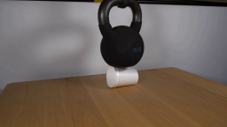
视觉工具实际返回图片 2
视觉工具实际返回图片 3
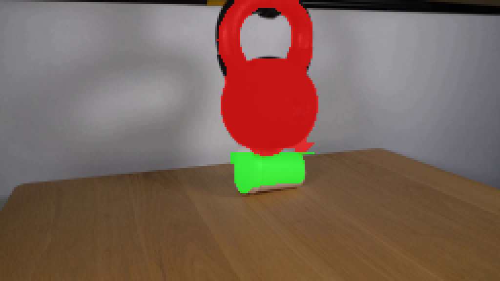
视觉工具实际返回图片 4
视觉工具实际返回图片 5
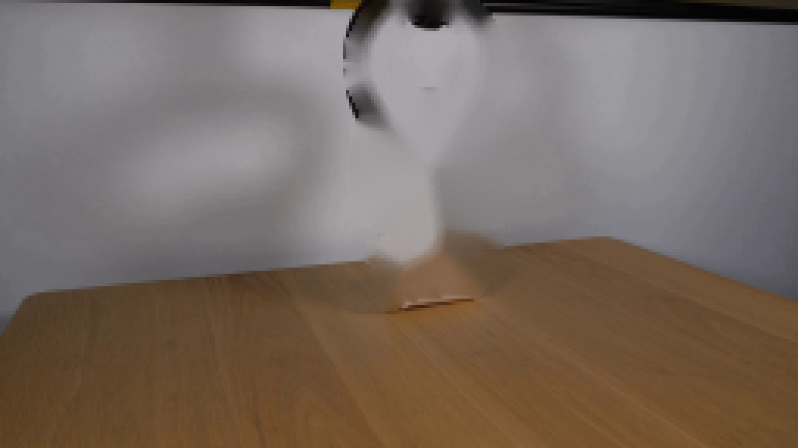
视觉工具实际返回图片 6
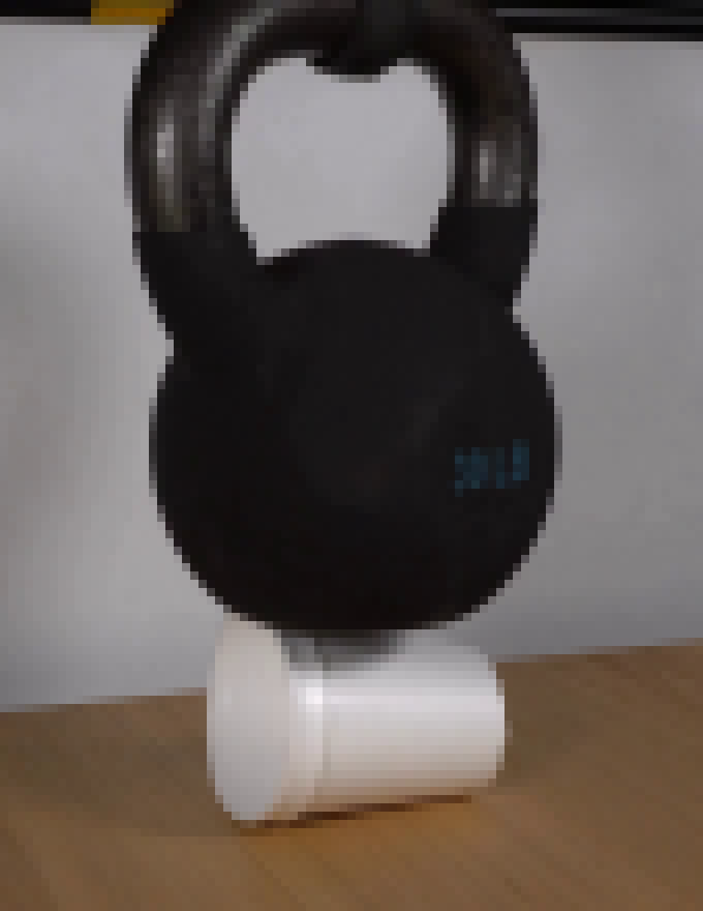
视觉工具实际返回图片 7
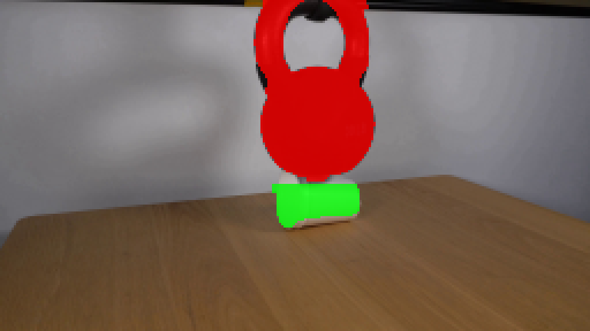
视觉工具实际返回图片 8
视觉工具实际返回图片 9
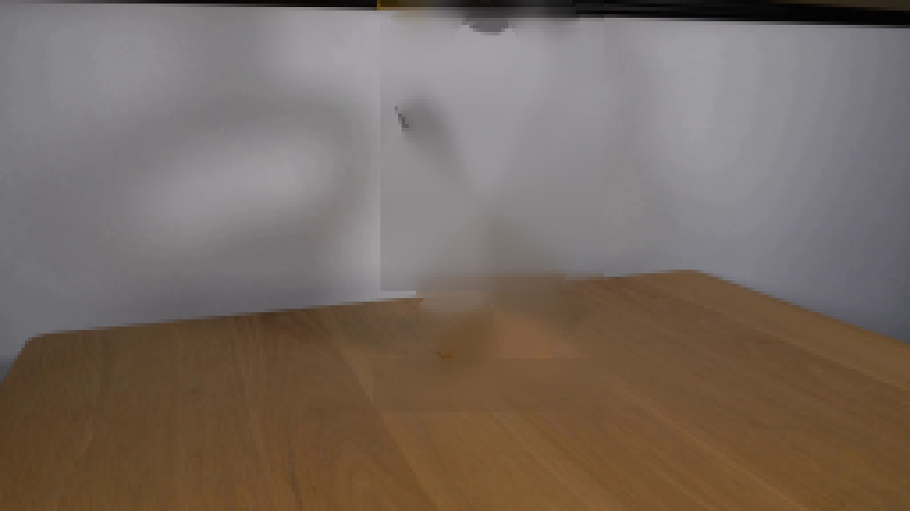
视觉工具实际返回图片 10
视觉工具实际返回图片 11
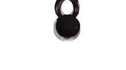
视觉工具实际返回图片 12
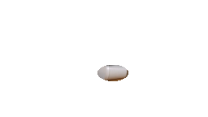
视觉工具实际返回图片 13
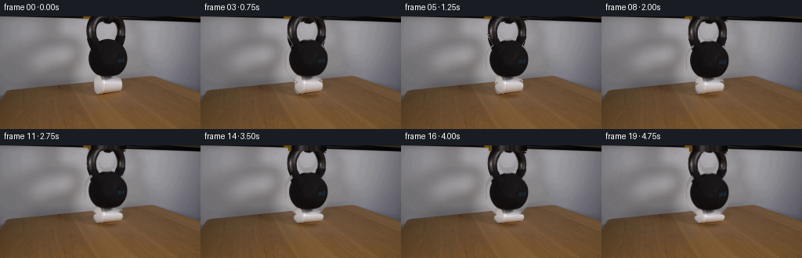
视觉工具实际返回图片 14
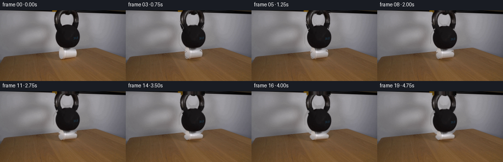
视觉工具实际返回图片 15
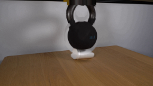
视觉工具实际返回图片 16
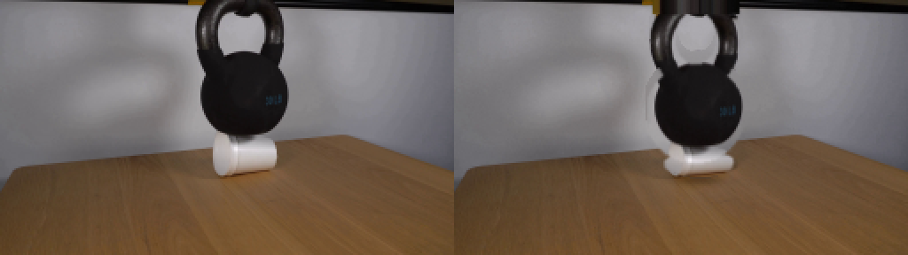
视觉工具实际返回图片 17
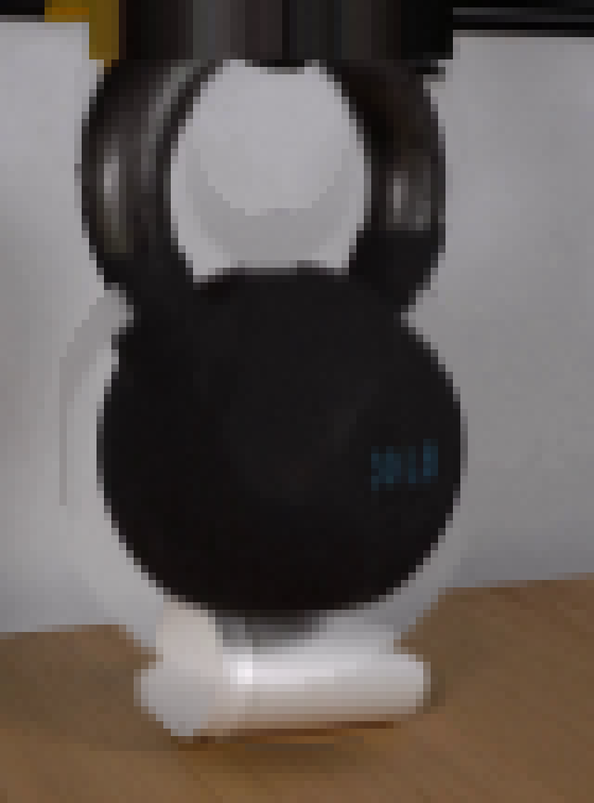
视觉工具实际返回图片 18

视觉工具实际返回图片 19
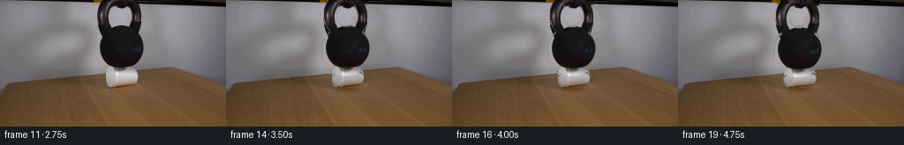
保存候选 2 份；完成命令 48 次；可验证图片返回 19 张。原始 API 响应与完整日志保留在本地。